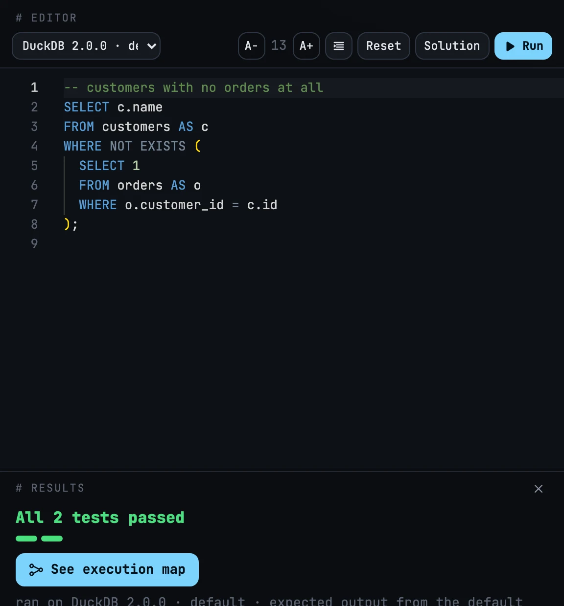
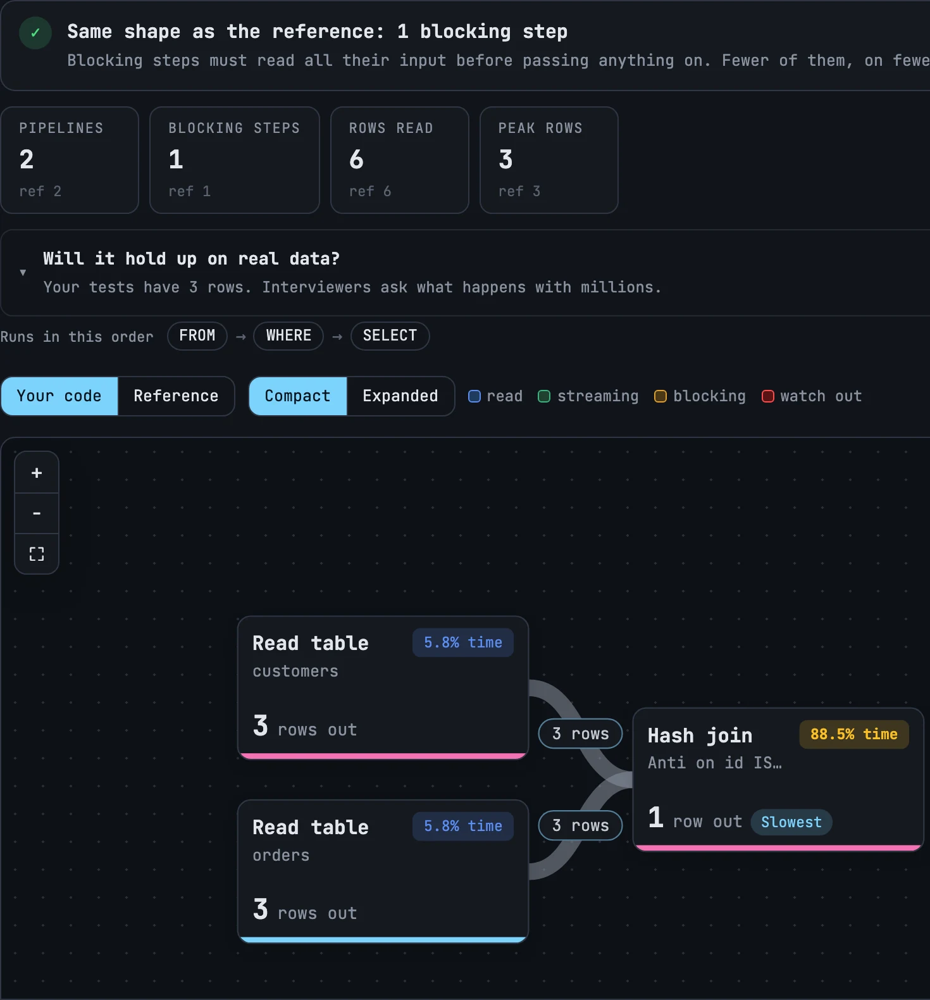
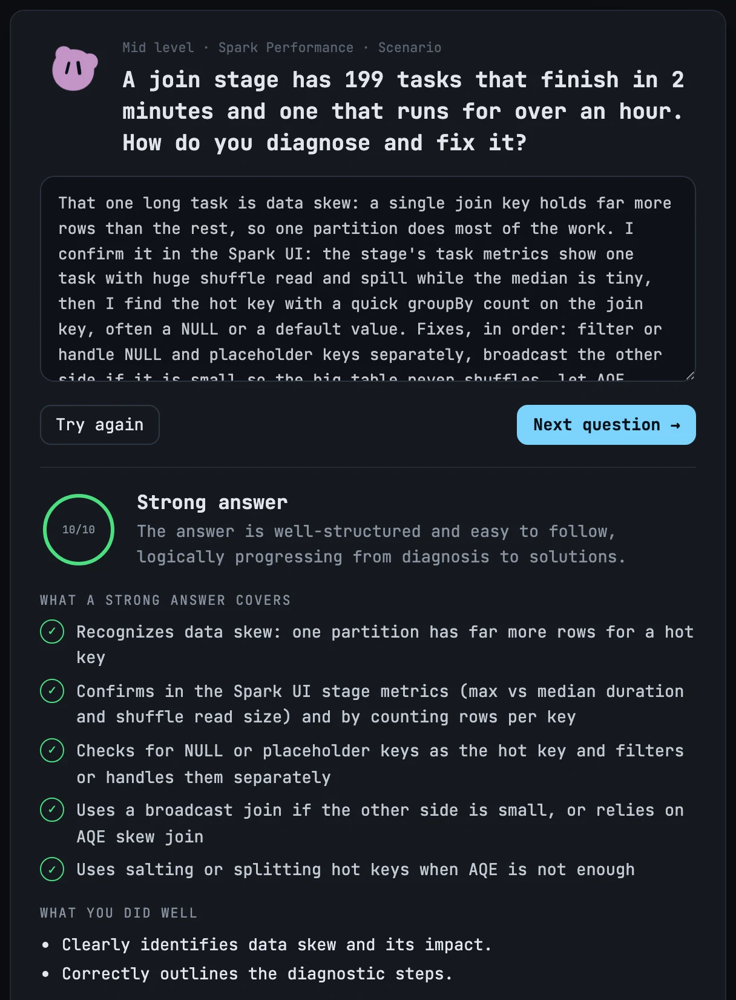
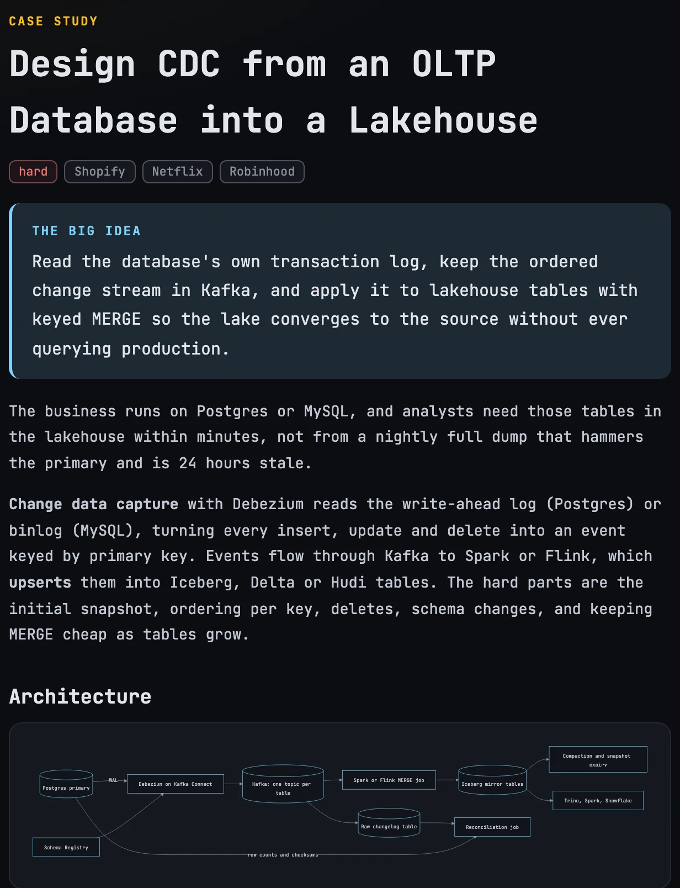

DATADOJO_
Practice for data and AI interviews like it's the real thing. Real engines grade your code, and friendly coaches give hints, not answers.
Everything you practise for data and AI roles
264 problems graded by actually running your code, the same way an interviewer would check it.

Real problems, real engines
Grouped by pattern: windows, gaps and islands, CDC, SCD2, metrics, RAG. Run them on DuckDB, SQLite, PostgreSQL or Spark, in MySQL, Snowflake, BigQuery and SQL Server syntax.
- Six-stage coaching chat that reacts to your test runs
- Format code in your engine's own dialect
- Curated lists, including Lakehouse: Delta, Databricks & Iceberg

See what the engine actually did
Spark stages and shuffles, SQL steps with row counts, Python line counts and Big-O, next to the best solution.
- Click a step to trace its lineage
- Open the actual rows that passed through
- Time your code on millions of rows

Mock interviews you answer out loud
Speak or type. Every answer is graded against a rubric, with a report at the end. Speech is transcribed on your computer.
- 243 questions across four roles
- Cheatsheets for each track
- Timed coding rounds with a score out of 100

Data and AI system design
From OLTP vs OLAP to RAG in production: diagrams, quizzes and case studies like CDC into a lakehouse and real-time fraud.
- Ask Sensei about any diagram
- Interview follow-ups on every lesson
The small things that add up
Built for daily practice, not a one-off cram.
Hints, not answers
Four coaches who nudge you through understand → approach → build → edge cases → optimise → review.
Up and running in two minutes
PySpark downloads itself the first time you need it.